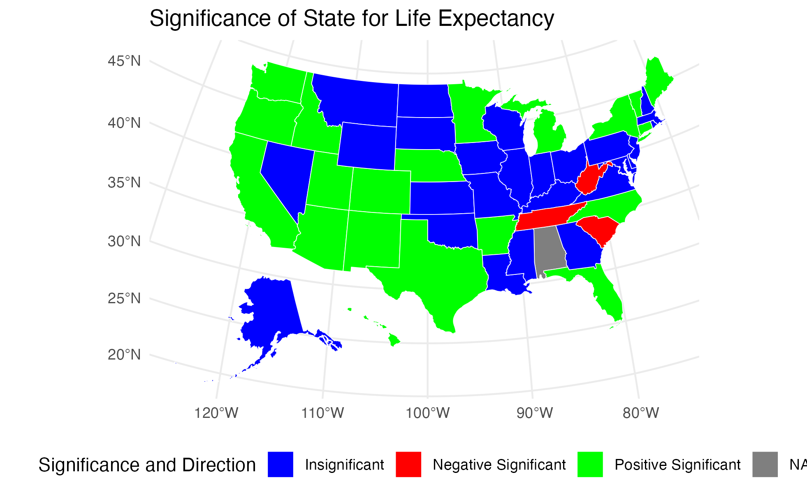
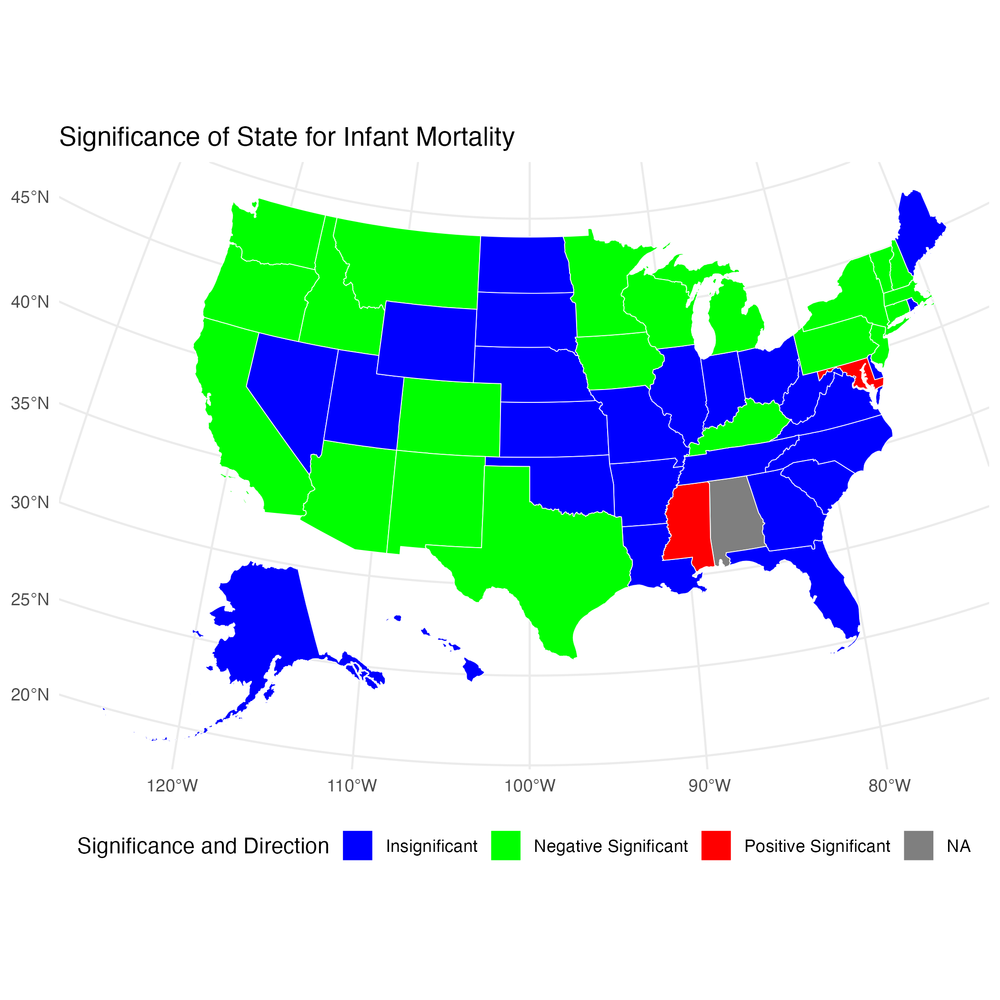
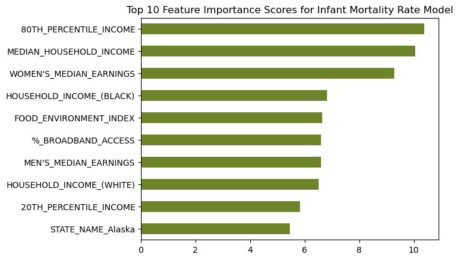

Results - need to update
Creating an Overall Health Quality Variable
As a novel way of assessing quality of health, we created a new variable to represent the overall health of a population. We knew that the following variables should be included in the creation of this new variable: LIFE_EXPECTANCY, AGE_ADJUSTED_DEATH_RATE, YEARS_OF_POTENTIAL_LIFE_LOST_RATE, %_FREQUENT_PHYSICAL_DISTRESS, and %_FREQUENT_MENTAL_DISTRESS. Reasons for choosing these variables is explained in ?@sec-goal1-details. A clear linear relationship is seen between each of these metrics was observed (see Figure 2).
{kind=link}
We projected these variables onto the first eigenvalue and assessed the contribution of each onto the projection. This was necessary to better interpret later analyses. We found that YEARS_OF_POTENTIAL_LIFE_LOST_RATE contributed to the projection by a large amount (see Figure 3), which suggested that further analyses represented YEARS_OF_POTENTIAL_LIFE_LOST_RATE far more than the other four variables.

YEARS_OF_POTENTIAL_LIFE_LOST_RATE made the most contribution by a very far margin. This suggests that further analyses represent YEARS_OF_POTENTIAL_LIFE_LOST_RATE far more than the other four variables.Next, we repeated a similar process as above to discover how much all the other variables were associated with the projection. We found the percent of population with access to exercise is most associated with the projection and chlamydia rate the least (see Figure 4). Other variables that were highly associated with the projection were preventable hospitalization rates (rate of Medicare enrollees being discharged from out-patient services), percent of homeowners, percent of kids in single-parent homes, and percent of people 65 years old or older. Since the projection is most explained by YEARS_OF_POTENTIAL_LIFE_LOST_RATE, this graph suggests that having access to exercise is most associated with variations in this metric. Further analysis needs to be done to confirm if a causal relationship exists between these two variables, and if so, in which directions.

CHLAMYDIA_RATE the least. Since the projection is most described byYEARS_OF_POTENTIAL_LIFE_LOST_RATE, that means access to exercise and chlamydia rate are associated with variations in this mortality metric the most and least, respectively.WRITE HERE

YEARS_OF_POTENTIAL_LIFE_LOST_RATE, southeastern states have higher rates and northwestern lower.Analyzing Impact of Access to Care on Health Metrics
In order to evaluate the health status of a group of people, we turned to three common metrics for doing so: life expectancy, mortality, and infant mortality.⁸ In the following sections, we modeled each of these by a list of variables representing access to care (see ?@sec-s_table_2). Our goal was to determine how access to care influenced each of these three metrics for determining health of a population.
Life Expectancy
Figure 6 demonstrates how median life expectancy varies by state. We decided to keep state in our linear model because it did have a significant correlation with life expectancy. Since not all of the states were significantly correlated, we created the following plot to show which states were significantly correlated (positively or negatively) with life expectancy, as is seen in Figure 7.


Equation 1 shows our final linear model and ?@sec-s_table_3 our coefficient table for preventative healthcare measures and life expectancy. We found that Primary Care Physician (PCP) Ratio were both positively correlated with life expectancy. Percentage of Food Insecurity and Segregation Index were both negatively correlated with life expectancy (that is, as food insecurity increased, life expectancy decreased). Percentage of Access to Broadband Internet was also positively correlated with life expectancy.
To better understand the survival (life expectancy) of different groups for each of these variables, we created Kaplan-Meier (KM) Curves where we plotted each variable by quartile. We then conducted a log rank test to compare across quantiles to see if the groups were significantly different from each other. Figure 2D shows life expectancy based on the percentage of food insecurity. Figure 2E shows the results of the log rank test (which are significant as p = <2e-16). Quantiles 1 and 2 (less food insecurity) observed less death than expected, but quantiles 3 and 4 (more food insecurity) observed more death than expected. This demonstrates that we are seeing a significant difference between life expectancy of people in the lower versus the higher quantiles of food insecurity.

Figure 2E: Log Rank Test Results for Life Expectancy and Percentage of Food Insecurity
| Quantile | N | Observed | Expected | (O-E)^2/E | (O-E)^2/V |
|---|---|---|---|---|---|
| quantile=1 | 704 | 704 | 505 | 78.411 | 98.013 |
| quantile=2 | 760 | 760 | 584 | 52.895 | 68.550 |
| quantile=3 | 757 | 757 | 745 | 0.184 | 0.254 |
| quantile=4 | 749 | 749 | 1135 | 131.551 | 230.098 |
Kaplan-Meier Curves for life expectancy were made with the following variables: PCP Ratio, Percentage of Food Insecurity, Segregation Index, and Percentage of Broadband Internet Access. Log rank tests were performed, and all of the results were significant. To explore the curves and log rank test results, please explore our gallery below:
GALLERY https://quarto.org/docs/output-formats/html-lightbox-figures.html
We then used machine learning algorithms to predict life expectancy of individuals based on these significant covariates along with the top ten features found through KBest (see Figure 9). It is important to note that a lot of features were found in both the linear regression model explained above and in the KBest result.

Our model predicted life expectancy based only on the fifteen significant access-to-care-related variables with 56% accuracy. While this may at first appear unimpressive, it’s important to note that 56% of life expectancy can be predicted or explained by only fifteen items- all of which relate to one’s access to healthcare. Only the remaining 44% can be explained by all other factors in a person’s life.
Infant Mortality

Figure 3A shows a difference between median infant mortality rates between states. Note that the chart appears to “stair-step” as infant mortality rates are represented as integers rather than continuous numbers. Because of the linear trend associated with each state, we included the variable in our linear model to determine which states were significantly correlated with infant mortality.

Figure 3B shows which states were positively or negatively correlated with infant mortality. Note that this time, negative significance in plotted in green as it indicates a lower infant mortality rate. In this case, Maryland and Mississippi are the only states with significantly higher rates of infant mortality.
In terms of preventative healthcare measures that were significantly correlated with infant mortality (Figure 3C), we found that Median Household Income and Broadband Internet Access were significantly correlated in the negative direction with infant mortality rates. That is, as income and access to the Internet increased, infant mortality rates decreased. We came across the same issue with segregation here as we did in our life expectancy model. The Segregation Index coefficient shows that as segregation increases, infant mortality rates increase as well.
Figure 3C: Infant Mortality Linear Model and Coefficients:
lm(formula = `INFANT_MORTALITY_RATE` ~ `state_name` + `AVERAGE_DAILY_PM2.5` +
`MEDIAN_HOUSEHOLD_INCOME_LN` + `SEGREGATION_INDEX` + `%_BROADBAND_ACCESS`,
data = ds_mortality_adjusted)| Predictor | Estimate | Std. Error | t value | Pr(>|t|) |
|---|---|---|---|---|
| (Intercept) | 57.531253 | 2.427216 | 23.703 | < 2e-16 *** |
AVERAGE_DAILY_PM2.5 |
0.036263 | 0.023539 | 1.541 | 0.124 |
MEDIAN_HOUSEHOLD_INCOME_LN |
-4.134217 | 0.269866 | -15.320 | < 2e-16 *** |
SEGREGATION_INDEX |
0.032420 | 0.004514 | 7.182 | 1.19e-12 *** |
%_BROADBAND_ACCESS |
-0.058167 | 0.009648 | -6.029 | 2.19e-09 *** |
In our machine learning model, we repeated the same process for infant mortality rate as for life expectancy, but got a low accuracy score of 36% due to the high number of NAs in our Infant Mortality Rate column. Future analyses would do well to increase record-keeping of infant mortality rates by county as the metric “indicates the current health status of a population and reflects the overall state of maternal health, as well as the quality and accessibility of primary health care available to pregnant women and infants.”³

Age Adjusted Death Rate

Age-adjusted death rate (mortality rate) appeared to vary across states as seen in Figure 4A, so we again kept state in our linear model. Figure 4B shows which states were significantly correlated with mortality rate. Negative correlation is in green to represent significantly lower death rates. The opposite is true for red-colored states.

Preventative healthcare measures that were significantly correlated with mortality rate are shown in Figure 4C. As food insecurity, segregation, and school segregation increased, mortality rates increased as well. As broadband internet access, vaccination, and number of rural residents increased, mortality rates decreased.
Looking at demographics, we noticed as income increased among white Americans, mortality rates decreased. This income trend was the opposite among Asian and Hispanic Americans. Looking closer at the income correlation plots, the trends for Asian and Hispanic Americans appear to have more data points that could be considered outliers. As the percentage of severe housing issues increased, the mortality rate decreased, but the correlation plot appears to have outliers that could be skewing this trend as well.
Figure 4C: Age Adjusted Death Rate (Mortality Rate) Linear Model and Coefficients:
lm(formula = `AGE-ADJUSTED_DEATH_RATE` ~ `state_name` + `%_VACCINATED` +
`%_SEVERE_HOUSING_PROBLEMS` + `%_FOOD_INSECURE` + `SCHOOL_SEGREGATION_IDX` +
`HOUSEHOLD_INCOME_(HISPANIC)_LN` + `SEGREGATION_INDEX` + `%_BROADBAND_ACCESS` +
`#_RURAL_RESIDENTS` + `HOUSEHOLD_INCOME_(WHITE)_LN` + `%_VACCINATED_(ASIAN)` +
`HOUSEHOLD_INCOME_(ASIAN)_LN`, data = ds_mortality_adjusted)| Predictor | Estimate | Std. Error | t value | Pr(>|t|) |
|---|---|---|---|---|
| (Intercept) | 9.933e+02 | 1.443e+02 | 6.884 | 1.06e-11 *** |
%_VACCINATED |
-2.097e+00 | 3.655e-01 | -5.737 | 1.29e-08 *** |
%_SEVERE_HOUSING_PROBLEMS |
-3.190e+00 | 5.191e-01 | -6.145 | 1.18e-09 *** |
%_FOOD_INSECURE |
1.503e+01 | 9.902e-01 | 15.181 | < 2e-16 *** |
SCHOOL_SEGREGATION_IDX |
2.925e+01 | 3.784e+01 | 0.773 | 0.43979 |
HOUSEHOLD_INCOME_(HISPANIC)_LN |
1.999e+01 | 9.581e+00 | 2.086 | 0.03725 * |
SEGREGATION_INDEX |
1.275e+00 | 2.641e-01 | 4.827 | 1.61e-06 *** |
%_BROADBAND_ACCESS |
-5.696e+00 | 5.048e-01 | -11.284 | < 2e-16 *** |
#_RURAL_RESIDENTS |
-1.468e-05 | 5.814e-06 | -2.524 | 0.01175 * |
HOUSEHOLD_INCOME_(WHITE)_LN |
-5.001e+01 | 1.544e+01 | -3.239 | 0.00124 ** |
%_VACCINATED_(ASIAN) |
2.830e-01 | 2.432e-01 | 1.163 | 0.24498 |
HOUSEHOLD_INCOME_(ASIAN)_LN |
1.067e+01 | 6.013e+00 | 1.774 | 0.07641 . |
Finally, we repeated our machine learning process to predict age-adjusted death rate based on our significant access to care covariates. Our model accurately predicted the binned death rate for 62% of our test data. Just thirteen access-to-care-related covariates predicted mortality rate 62% of the time! This again emphasizes the importance of access to care in one’s overall health status.